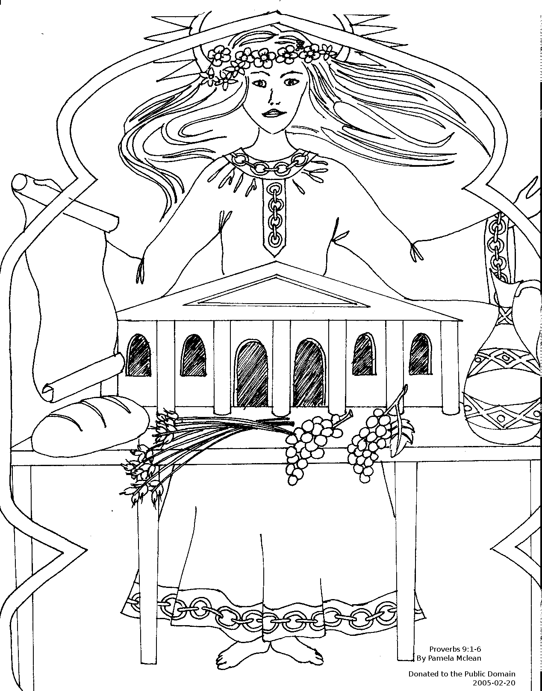

This week's lessons: 1 Kings 2:10-12; 3:3-14 and Psalm 111 or Proverbs 11:1-6 and Psalm 34:11-14 Ephesians 5:15-20 John 6:51-58
Elementary School Pew-work
|
 |
|
1.What has Wisdom done? _________________________________ 2. Who does Wisdom invite to her feast? _________________________________ 3. Who is welcome at Wisdom's feast? _________________________________ |
M R R H E A V E N
|
(John 6:51) I am the living bread that came down from heaven. Whoever eats of this bread will live forever; and the bread that I will give for the life of the world is my flesh." (NRSV) |
1isodWm
_________ has built her house with its seven columns. 2She
has prepared the meat
and set out the wine. Her estaf ________ is
ready. 3She has sent her servant women
to announce her
itviniotna ________ from the highest hills: 4"Everyone
who is ignorant or
hifoflos ________ is invited! 5All
of you are ewmeolc ________ to my meat and wine. 6If you
want to live, give up your foolishness and let understanding iudge
________ your steps.
Next Week:1 Kings 8:(1,6,10-11), 22-30, 41-43 and Psalm 84 or Joshua 24:1-2a, 14-18 and Psalm 34:15-22, Ephesians 6:10-20, John 6:56-69